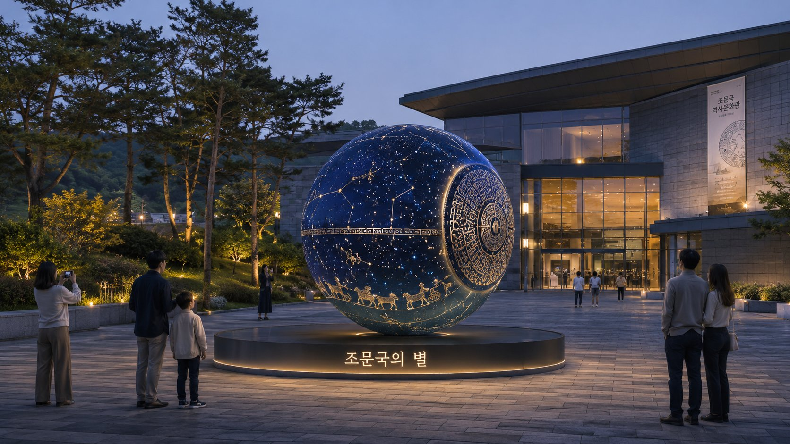
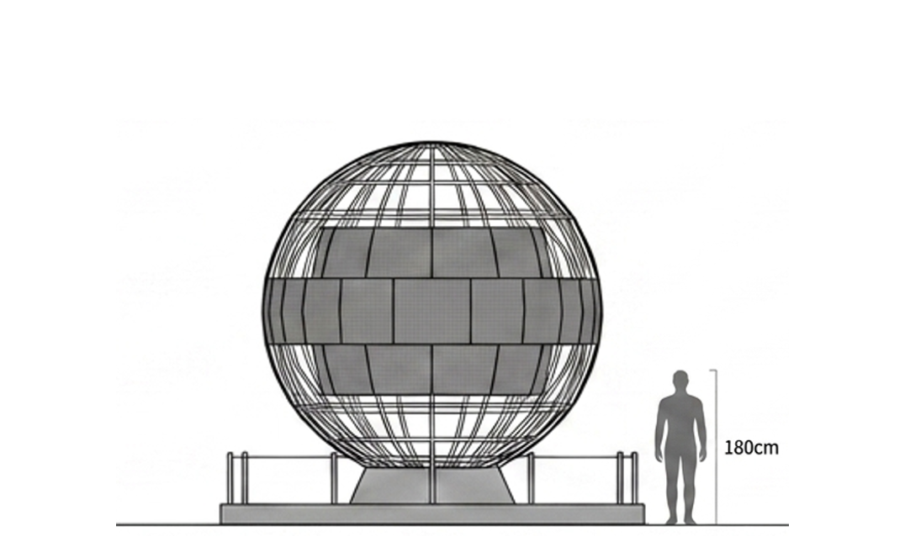
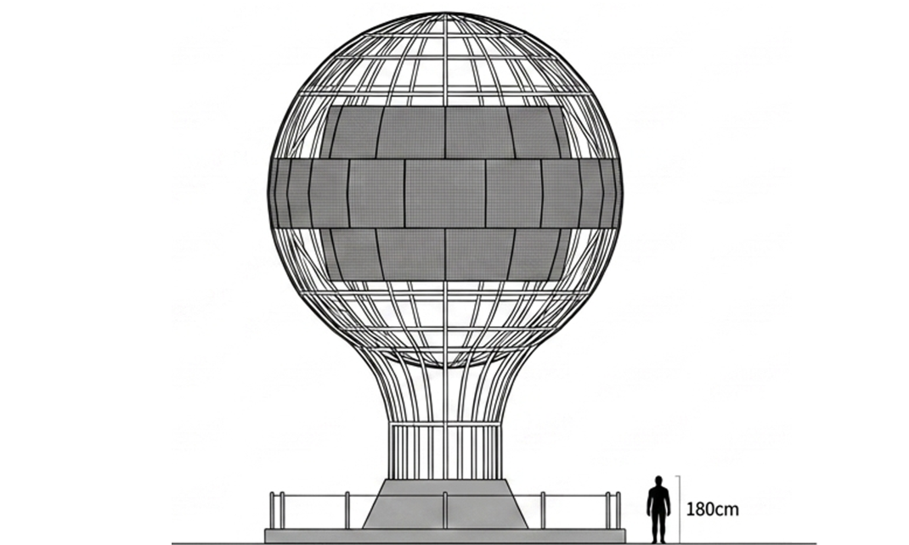
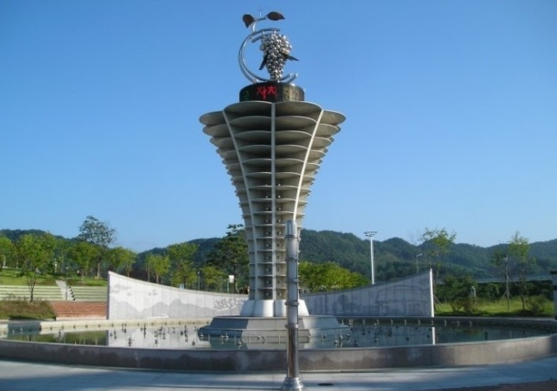
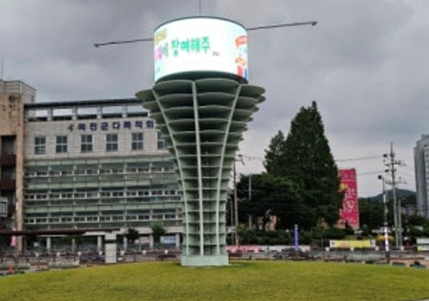

거점 1
조문국의 별
역사 · 문화 거점
PROJECT · The Brilliant Star of UISEONG
의성군 전체를 하나로 연결하는 듀얼 랜드마크 마스터플랜
“조문국의 별” & “시민의 별” 동시 조성 제안
EXECUTIVE SUMMARY
의성군 통합 공공 미디어 플랫폼 구축 제안
‘지나쳐가는 도시’를 넘어 ‘머무는 체류형 관광도시’로
단방향 볼거리를 넘어, 데이터가 연동되는 양방향 스마트 미디어 생태계를 구축합니다.
듀얼 랜드마크 동시 조성
두 거점을 하나의 미디어 아트로 연결하는 통합 공공 미디어 플랫폼
거점 1 · 조문국의 별
역사 · 문화 거점
직경 3m · 높이 약 4m / P6 · 5,000nit
박물관 야외 인터랙티브 미디어아트
시안 자세히 보기 →거점 2 · 시민의 별
소통 · 관문 거점
직경 6m · 높이 약 12m / P6 · 5,000nit
복원사거리 중앙 로터리 관문 랜드마크
시안 자세히 보기 →관광 랜드마크 + 시민 서비스 + 참여형 콘텐츠 를 하나로 통합
코어 인프라
SPHERE LED 2식
구조 / 기초 보강
공간 특화
미디어·바닥 조명
포토존 조성
스마트 시스템
통합 CMS · 키오스크
QR 참여
콘텐츠·운영
대표 12종 · 계절/축제
운영 교육
총 사업비 약 0억 ~ 0억 규모
통합 미디어 플랫폼(거점 2곳 동시 조성) 기준 · 기획 단계 개략 추정
PHILOSOPHY
과거 · 단순 조형물
볼거리 위주의 단방향 랜드마크
단방향 볼거리를 넘어, 데이터가 연동되는 양방향 스마트 미디어를 구축해 다시 뛰는 역동적인 의성의 랜드마크로 자리매김하는 것이 본 프로젝트의 궁극적 목표입니다.
DUAL LANDMARK
두 거점의 동시 구축은 관광객의 발길과 군민의 일상을 하나로 묶는 가장 완벽한 시너지를 창출합니다.
거점 1
역사 · 문화 거점
거점 2
소통 · 관문 거점

조문국의 하늘과 천문을 융합한 야간 특화 랜드마크
박물관 주변 미디어 조명 및 인터랙티브 바닥 조명 동시 조성
가족·학생 단위 관광객의 야간 체류 유도 및 포토존 제공
거점 2 · 시민의 별
차량과 보행자 모두에게 즉각 인지되는 고시인성 관문. 기단부 QR 키오스크와 연계해 실시간 시민 참여형 콘텐츠를 표출합니다.
정보와 참여가 실시간으로 흐르는 스마트 도시 상징
기단부 QR 참여 시스템 연계 및 보행자 친화적 관광 안내 키오스크 동시 배치
차량·보행자 모두에게 인지되는 고시인성 관문이자 실시간 긍정 소통 창구
HARDWARE
두 거점은 각 입지의 역할에 최적화된 규모로 설계됩니다. (공통 사양 P6 / 5,000nit)

거점 1 · 조문국의 별

거점 2 · 시민의 별
PLATFORM
CITIZEN ENGAGEMENT
별도 앱 설치 없이 키오스크 및 하단에 부착된 QR 코드 스캔
축제 기대평·이웃 응원·군정 의견 등을 스마트폰으로 즉시 입력
관리자 CMS의 자동/수동 필터링을 거쳐 SPHERE 화면에 안전하게 실시간 롤링 표출
CONTENT & CMS
쉴 새 없는 화려한 영상의 반복을 지양하고, 정제된 정보와 예술적 휴식을 교차 송출해 군민의 피로도를 최소화합니다.
SAFETY & STABILITY
일몰 후 야간 휘도 자동 제한 시스템 가동, 교차로 운전자 시야 방해를 원천 차단하는 스마트 조명 제어 기술 적용
대형 구체에 가해지는 풍하중을 완벽 계산한 태풍 대비 내풍 구조 설계 및 지반 기초 특수 보강 작업 완료
원격 모니터링 시스템 확립 및 재난 긴급 정보 우선 편성, 군청 담당자 대상 필수 운영·대응 교육 지원
BUDGET & WBS
총괄 예산 방향 약 15억 ~ 20억 규모 (거점 2곳 동시 조성 기준 · 기획 단계 개략 추정)
※ 영상 콘텐츠 제작 스펙, 현장 구조물 컨디션 등에 따라 예산은 변동될 수 있습니다.
MASTER PROCESS
2개 거점 동시 구축 부지 심층 검토
최종 예산안 확정 및 마스터플랜 수립
6m 대형 구조물 전용 전기/구조 안전성 정밀 검토
주변 교통 시야 확보 시뮬레이션
상징형 하드웨어 제작, 주변 특화 조성 설계
12종 킬러 콘텐츠 및 CMS 소프트웨어 개발
현장 설치 공사, 통합 송출 테스트
담당 공무원 운영 교육 진행 · 지역 축제 연계 공식 런칭
PROVEN CASE 01
데일리라이브 보도 · 송파구 “수준 높은 미디어아트로 일상 속 문화 공간으로 자리잡았다”
조성 1주년 만에 일상 속 문화 공간으로 자리잡으며, 구민 참여형 메시지 송출·야외 공연 등 도시 관광·문화 활성화의 새로운 모델로 주목받고 있습니다.
📰 기사 원문 보기PROVEN CASE 02
노후된 기존 조형물을 LED 미디어 랜드마크로 전환하여 도시 공간에 활력을 불어넣고, 시민 소통 미디어로 자리잡은 검증된 리뉴얼 사례입니다.


VISION
단편적인 조형물 설치를 넘어, 유동인구를 유입시키고 체류 시간을 늘려
지역 경제에 활력을 불어넣는 강력한 공공 미디어 플랫폼이 될 것입니다.
감사합니다.
모두가 함께 만드는 더 좋은 의성을 위해 최선을 다하겠습니다.